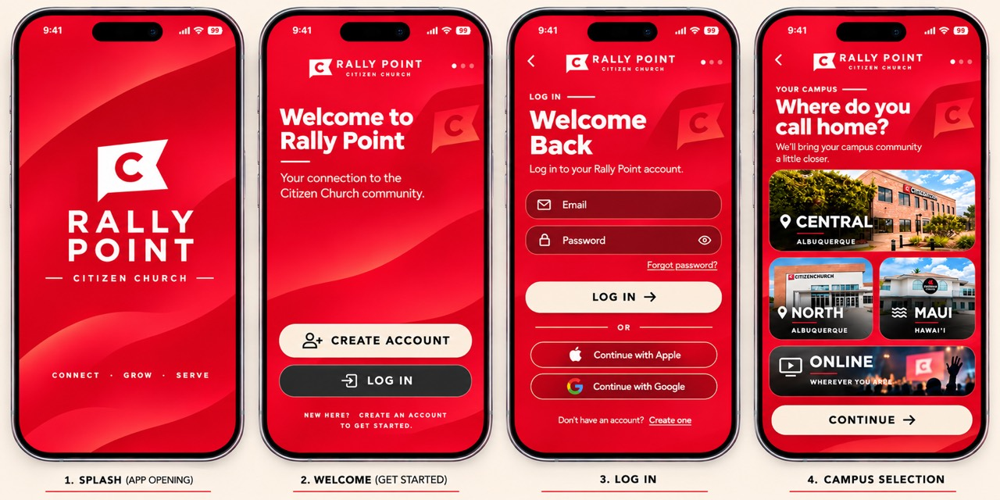
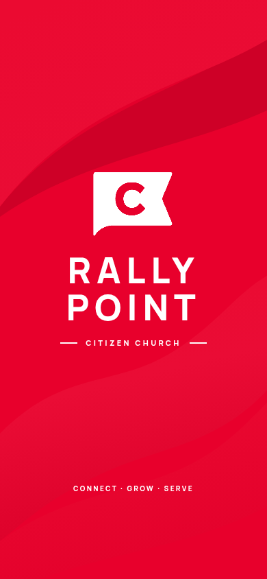
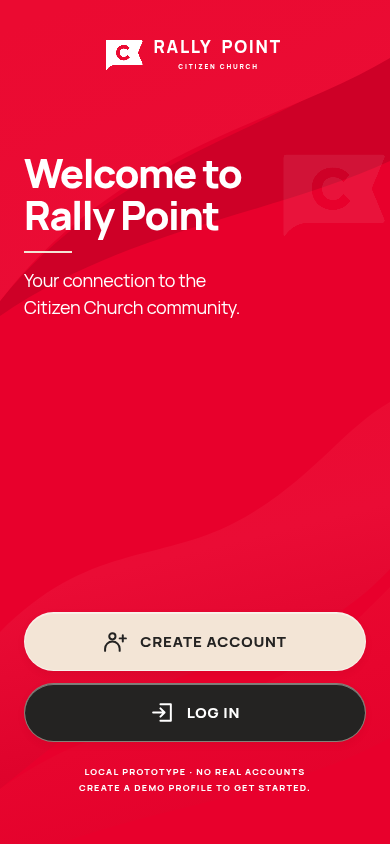
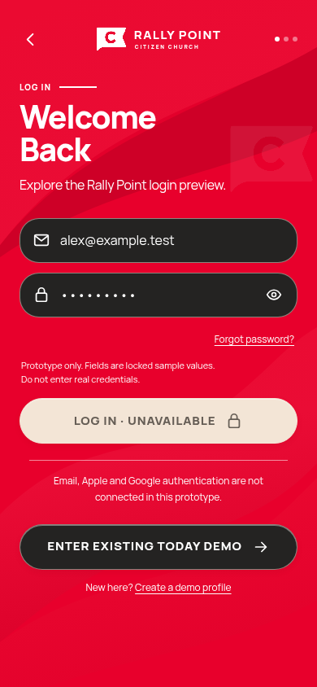
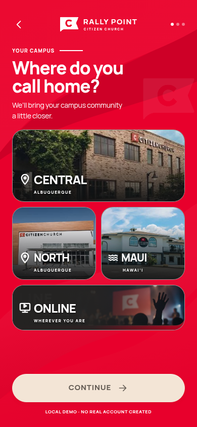

Rally Point · Onboarding v2.0
The approved four-screen reference above actual 390 × 844 application captures. Open any screenshot at full size. The device frame and status bar belong to the mockup, not the application.
Approved reference

Actual implementation







